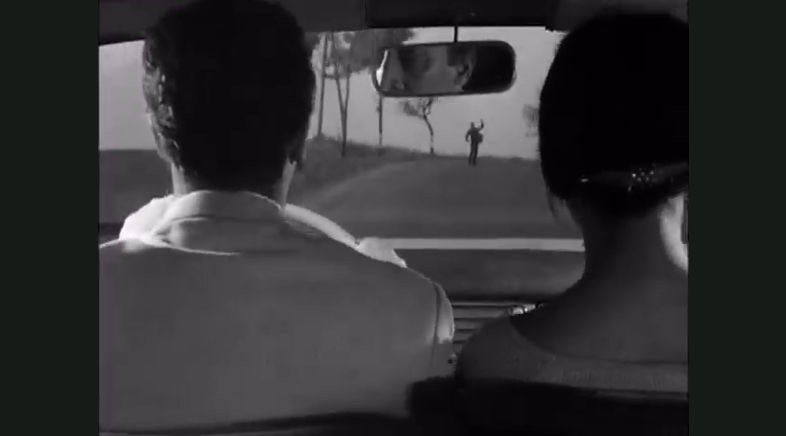
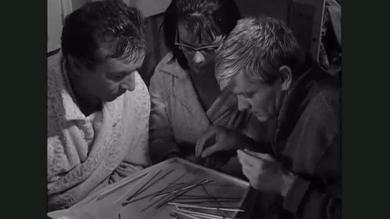
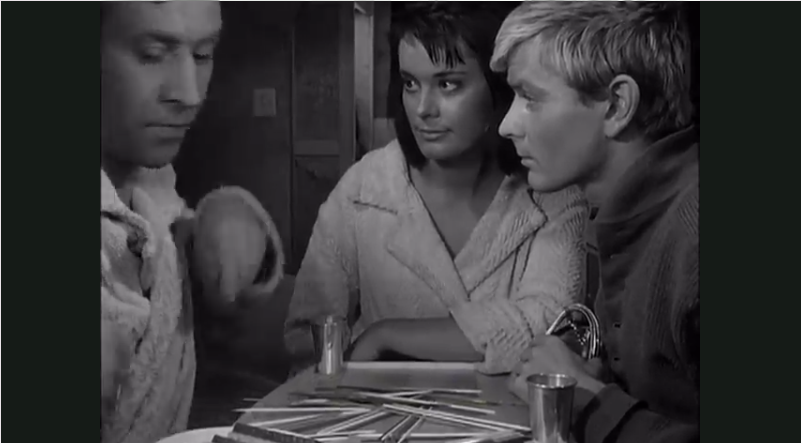
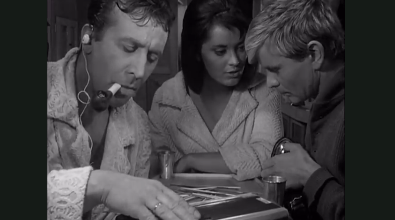
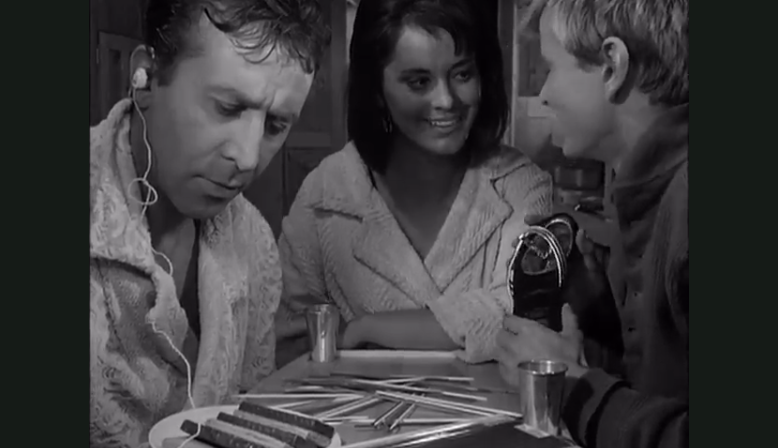

Storm in the boat
This essay was written in April 2016. I wrote it as part of the class called Rhetoric of Film at Stanford to fulfill the requirements of the Program in Writing and Rhetoric (PWR). Originally, the essay was written in Google Docs. I tried to port the text to Markdown and Tufte-css as an exercise in creating interactive, readable and beautiful publications. This article, sadly, has not been particularly interactive.
The images on the side were added subsequently to replace a paywalled link to a clip of the scene.
A middle aged couple sits in a car. Trees pass by. As they speed well above the limit, a hitchhiker appears in the middle of the road. First encounter.
The husband stops the car and barely avoids killing the young man. A drifter, with no goal in mind who walks for the sake of walking, joins them to their destination - a sailing trip in a small boat. The trio embarks on a seemingly simple and pleasant journey through the vast expanses of water. This is the setting for Roman Polanski’s debut feature film Knife in the Water (1962).
Yet, something is off. Right from the start, we can observe the complete lack of tenderness between husband and wife - Andrzej and Krystyna. They mock and tease each other. A kiss on the neck is a benign bite more than anything else. We observe the glimpses of desire in Krystyna’s eyes towards the young man.
Andrzej invites the hitchhiker on the sailing trip for no explicit reason. Yet, as they prepare the boat, he remarks: ‘When two men are at sea, there’s always a skipper and a drill sergeant’. Andrzej, at an age about forty, with years of sailing under his belt, shouts orders left and right. The young man protests. Why shouldn’t he be the one to steer the boat? Andrzej allows him to, only to take back control after a complete failure on the side of the student. Humiliated, Young (for he was not named in the film, we shall refer to him by Young) retreats. As the movie progresses, there is a constant competition between the two men. Who has more physical prowess? Who is wittier? Who can attract and keep the attention of Krystyna? With the stage set, the viewer will be persuaded to believe in the inevitability of the victory of the young, the exciting, the exuberant wins over tradition, habit and commitments in matters of love. That victory comes as a consequence of the inherent natures of the characters representing each side.
After a few hours of untroubled sailing, a storm forces the trio to anchor and go inside the boat. Once inside, the competition and mind games continue. This time around Krystyna will be playing the central role, compositionally and figuratively. In one of the longest takes of the movie all three people sit around a table, the camera is still. Everyone is cramped up, A competition in a tight spot.
for there is no space in the tiny boat. The frame of the movie gives the perception of closeness and intimacy. If only the camera was closer, the viewer might read the characters’ thoughts, desires, cravings. But this tight framing also creates the feeling of inescapability. Those same thoughts and desires are present. Neither the characters nor can the viewer avoid them. There simply is nowhere to go. And here lies a highly successful rhetorical device; by choice of such a highly constrained setting, the auteur compels the viewer to believe the events about to transpire are predetermined, the fate of the trio has been decided.
The characters pass the time in the storm with a game of jackstraws. Both the wife and Young have lost an item in the game, they need to perform an act to redeem their lost wares. Krystyna loses a shoe, the student - his belt. The flirtation between the student and the wife escalates as they undress each other. Although not literally, they do exchange articles of clothing. Andrzej in the meantime seems to ignore the whole situation, or at least turns a blind eye to it. We must reject the hypothesis that Andrzej is oblivious. All of his character is built around the theme of experience - in sailing, in life in general. Thus, a reasonable assumption would be that he is also experienced in the matters of love and attraction. His words “Show him what a nice voice you have” directed at his wife seem like a dare of sorts. He asks “Do you have the guts to follow through with what I know you desire?” After Andrzej protests to her choice of a song, Krystyna retorts “You are outvoted, skipper.” Seemingly an innocent line, the subtle irony undermines the captain’s authority.
This hostility, mild as it may be, between husband and wife is further hinted at through the visual separation of the two within the composition of the scene. Krystyna sides with Young.
Even though they are married, she stands in much closer physical proximity to the hitchhiker, virtually avoiding contact with her husband. All three of the characters are in the frame, but we can sense the separation between Andrzej and a new ‘couple’ - Krystyna and Young. Gradually, one communication channel after the other is cut, resulting in a communication breakdown. It begins with the physical separation of what will eventually become two separate scenes. The focus of the action is the argument between Andrzej and Krystyna, creating a gap between them. Then, auditory separation is created through the radio Andrzej listens to - a boxing match. The husband puts on headphones and goes for a smoke. Not that he moves, just lights his pipe and turns away to the radio. In the meantime, the game of courting between Krystyna and Young continues with her song. Andrzej smokes in the scene on the right. Krystyna sings to Young.
Even visual contact between Andrzej and the couple is broken, completing the separation of the two scenes. Although no movement of actors, or camera, has transpired, we are now watching two concurrent shoots - one is the two shot of Krystyna and Young, the other is a medium close up of Andrzej smoking. Andrzej is isolated. As the student’s poem goes to an end, Andrzej reengages. A sequence of movements reestablishes the communication and the two scenes merge once again. First the husband takes of the headphones, he returns to the game played by all three, and speaks to them once again.
So does Andrzej isolate himself? Or is he isolated by the ‘couple’? Andrzej asks himself that. He wonders who knocked out Molik (the boxer in the match that Andrzej listens to). Then asks: “How did he get knocked out?” These questions are the only glimpse into his inner thoughts we get. The literal reading of those questions would be that Andrzej is thinking about the boxing match. In the context of his isolation from his wife and Young, Andrzej himself got knocked out - both out of his leadership position and out of the group. Krystyna undermines his authority, laughing at the claims of captaincy, and tells him to listen to the fight instead of her song. The argument between husband and wife is the reason for Andrzej’s departure from the group, as described above. Hence, we can conclude that Krystyna knocked him out. A wife, supposedly faithful, vowed to be with Andrzej till death, yet Krystyna sides with the poor student she met less than a day prior. The student excites her.
Young requests a song and Krystyna complies. Her song can be interpreted in two ways. On one side, it reinforces the aforementioned separation of scenes. On another, it builds up the tension between the two; they are now interacting privately, at his request, in an intimate setting. Her song is sad, containing the striking line “There’s no tenderness in us”. She cannot be singing about herself and the student whom she barely knows. However, there is certainly no tenderness between the married couple. Let us contrast that with the joyous, almost childish laugh, Krystyna and Young share after her first attempt at singing. Tenderness.
The auteur’s choice of the song that she performs is the expression of the Krystyna’s unhappiness and frustration with her marriage.
Arguments, games, desires, boxing, infidelity all form a one-of-a-kind emotional storm in the tiny inside space of the boat. The characters in the film, all of them proud and resolute, pursue their desires. Each individual makes a choice of how to act. Yet, taken as a group, the dynamics, the combination of individual choices leaves the viewer with a single impression: there simply was no other possible development of events. The desire to prove himself still capable, or even better than his younger counterpart, leaves Andrzej alone and distraught. He knows he is losing something, hardly capable of pinning exactly what. Krystyna dives into dangerous territory risking her way of living (by her own admission an empty one) for excitement. Young, initially humiliated, now has won over his elder. Flirting with the wife is as much of a product of desire for her as it is motivated by trying to prove himself better than the Experienced Andrzej. The characters act as placeholders for the pattern of human life shown in the film.
This pattern is timeless, a consequence of what humans are. Through the isolation on the boat, the auteur of the film, and the scene, takes away any historical context that might otherwise exist. Made more than six decades ago, barely any details in the movie seem outdated. There is no mention of political system, economic organization or other social factors. The scene simply claims: “left to their own devices, this is outcome.” Andrzej, Krystyna and Young are the dolls that enact the play determined by who they are and the situation they are in.